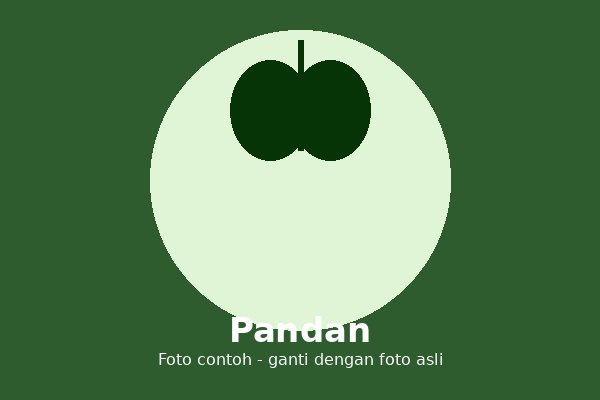

Pandan adalah tanaman daun beraroma khas yang sering digunakan sebagai penyedap alami dan pewarna hijau pada berbagai makanan dan minuman tradisional.
Pandan is a fragrant leaf plant commonly used as a natural flavoring and green coloring agent in traditional dishes and drinks.
Tumbuh subur di daerah tropis yang lembap, cocok ditanam di pekarangan maupun dalam pot.
Thrives in humid tropical areas, suitable for planting in yards or pots.